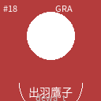
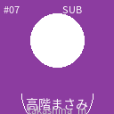
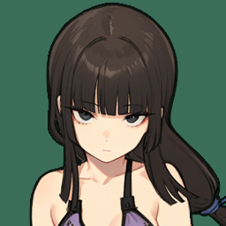

SPECIAL EVENTS — VARIANT B FINAL v2
B案「エンブレム」確定版。v1からの変更: ①エンブレムを画像ファイル参照に(仮画像を生成済み、同名上書きで差し替え) ②トーナメント表を縦積みピラミッド型に刷新 — 選手枠を縦に大きく、顔画像入り。
フォント階層(Bebas/Oswald/Noto Sans JP)・金の細二重罫・純黒Stage・カラーキー1色は v1 の共通言語のまま。
フォント階層(Bebas/Oswald/Noto Sans JP)・金の細二重罫・純黒Stage・カラーキー1色は v1 の共通言語のまま。
§1 エンブレム(仮画像 — 同名ファイル上書きで差し替え)
置き場: image/emblem-spring.png / emblem-summer.png / emblem-autumn.png / emblem-winter.png(各256×256・透過PNG)。UIは常にこのパスを参照するので、Keisuke さん制作の本エンブレムを同じファイル名で上書きするだけで全画面に反映される。

SPRING — 春タッグリーグ
image/emblem-spring.png

SUMMER — ジュニア
image/emblem-summer.png

AUTUMN — 勝ち残り対抗戦
image/emblem-autumn.png

WINTER — C-6 PPVトーナメント
image/emblem-winter.png
§2 春リーグ表(顔画像入り)
v1 B-1 に顔画像ペアと直近試合ストリップを追加。1位の順位数字と勝者リングだけが大会色。
B-1' 春 / リーグ表
SPRING TAG LEAGUE
春のタッグリーグ — 総当たり戦
第3回大会 / リーグ 第4試合まで終了
| Team | Record | Points | |
|---|---|---|---|
| 1 |   ★ 自団体富岡加奈子 & 高津小春 ★ 自団体富岡加奈子 & 高津小春 |
2勝0敗1分 / 接戦+1 | 8pt |
| 2 |  NOVA IMPACT川野辺菜穂子 & 澤出みずき NOVA IMPACT川野辺菜穂子 & 澤出みずき |
2勝1敗 | 6pt |
| 3 |  EMPRESS GRAND大河内紗代子 & 出羽鷹子 |
1勝1敗1分 / 接戦+1 | 5pt |
| 4 | CRESCENT RISE橘玲美 & 生駒エリカ |
0勝3敗 | 0pt |
Result — 第4試合
富岡 & 高津
WIN VS 大河内 & 出羽 MQ 63 接戦+1pt
富岡 & 高津WIN VS 大河内 & 出羽 MQ 63 接戦+1pt
§3 夏トーナメント — 縦積みピラミッド型(作り直し)
v1の横樹形図を廃止。準々決勝(8名の顔)→準決勝→決勝→王者と上から下へ絞り込まれていく縦構成。下段ほど顔が大きくなり、最下段の王者が最大+金枠。勝者は大会色リング、敗者はモノクロ落ち。
B-2' 夏 / トーナメント(縦型)
JUNIOR CUP
ジュニアトーナメント — U-20
Vol.7
Quarter Final — 準々決勝
高津小春
WIN

宇田川里奈
—

深町真琴
WIN

高階まさみ
—

堂前ユキ
WIN
副沢たまき
—

黒江舞
WIN

林真尋
—
Semi Final — 準決勝
高津小春
WIN
深町真琴
—
堂前ユキ
—
黒江舞
WIN
Final — 決勝
高津小春
WIN
VSMQ 71
黒江舞
—
高津小春
Junior Champion — Vol.7
メモ
・この縦型はリーグ決勝(春)・勝ち残り対抗戦の布陣(秋)・C-6の8名(冬)にも同じ骨格で流用可能(下に行くほど大きく=勝ち残るほど大きく)。
・エンブレムは §1 の4ファイルを差し替えるだけで全画面反映。
・進行時は「次の試合へ」で行が1つずつ埋まり、敗者がモノクロに落ちる。優勝ブロックは最後にファンファーレとともに出現。
・エンブレムは §1 の4ファイルを差し替えるだけで全画面反映。
・進行時は「次の試合へ」で行が1つずつ埋まり、敗者がモノクロに落ちる。優勝ブロックは最後にファンファーレとともに出現。